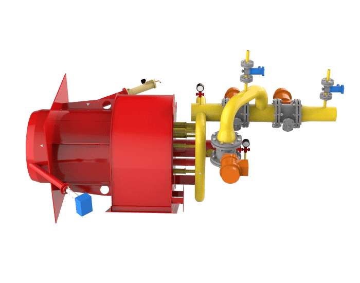
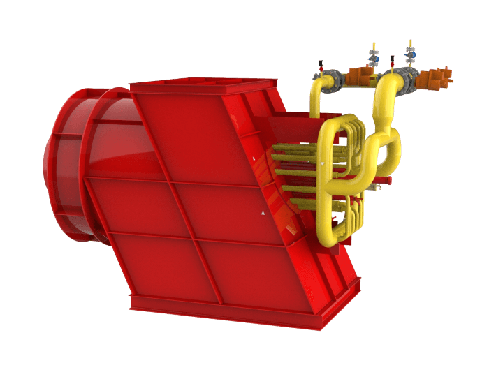
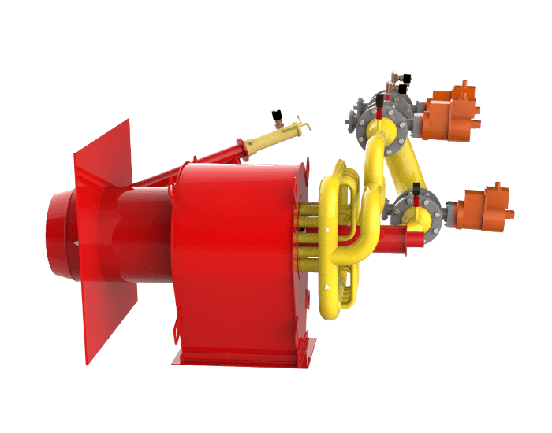
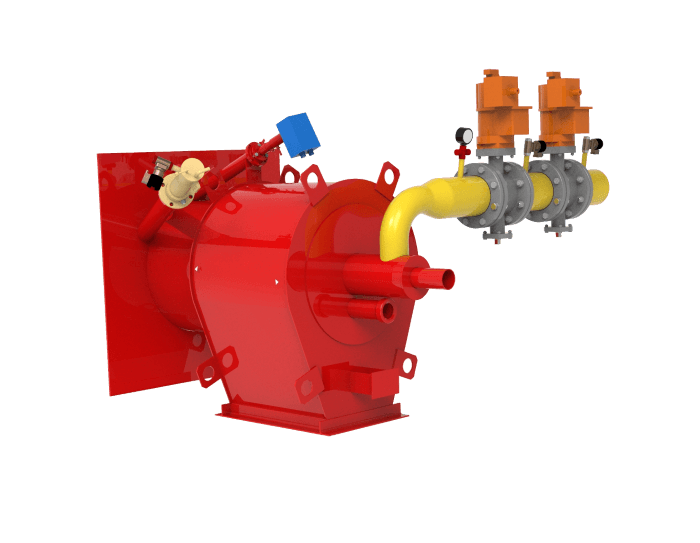
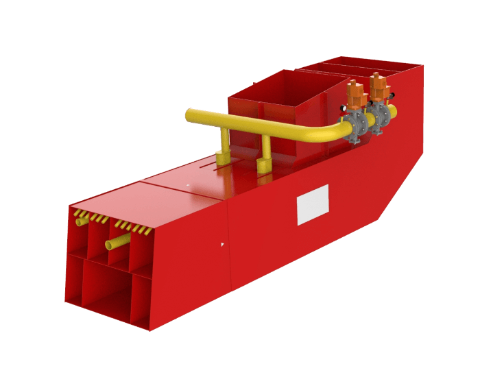

Пылегазовая вихревая горелка с индивидуальным подводом воздуха и двухколлекторная по подаче газа
Горелки пылегазовые прямоточно-вихревые тепловой мощностью от 15 до 60 МВт предназначены для сжигания угля и природного газа, как раздельно, так и совместно в одной горелке без снижения экономичности. Горелки могут комплектоваться всем дополнительным оборудованием, обеспечивающим безопасность и АУГ горелки: ПЗК для газа и мазута, ЗСУ, датчиком контроля факела, манометрами.
Газомазутная вихревая горелка с индивидуальным подводом воздуха, одноколлекторная по газу
Газомазутные горелки тепловой мощности от 7 до 50 МВт предназначены для установки на энергетических и водогрейных котлах, работающих на природном газе и мазуте. Выполнена с индивидуальным подводом воздуха и центральной подачей газа. В воздушном канале устанавливается аксиальный закручивающий аппарат с профилированными лопатками. Природный газ подается в центральный газовый коллектор и отверстия в конусной насадке и выходит в зону смешения с воздухом. Могут комплектоваться оборудованием, обеспечивающим безопасность и АУГ горелки: ПЗК для газа и мазута, ЗСУ, датчиком контроля факела, манометрами.
Газомазутная вихревая горелка с индивидуальным подводом воздуха и двухколлекторная по газу и с отдельным каналом подачи газов рециркуляции
Горелки газомазутные вихревые с отдельным каналом подачи газов рециркуляции тепловой мощности от 15 до 60 МВт предназначены для установки на энергетических котлах, сжигающих природный газ и мазут, как раздельно, так и совместно в одной горелке без снижения экономичности и позволяющие снижать выбросы NOх. Горелки могут комплектоваться всем дополнительным оборудованием, обеспечивающим безопасность и АУГ горелки: ПЗК для газа и мазута, ЗСУ, датчиком контроля факела, манометрами.
Газомазутные вихревые горелки с индивидуальным подводом воздуха и двумя коллекторами подачи газа
Газомазутные вихревые горелки тепловой мощности от 7÷60 МВт для установки на энергетических и водогрейных котлах, сжигающих природный газ и мазут как раздельно, так и совместно в одной горелке без снижения экономичности и позволяющих снизить выбросы NOx. Исполнение горелок зависит от типа котла, компоновочных решений. Горелки могут комплектоваться всем дополнительным оборудованием, обеспечивающим безопасность и АУГ горелки: ПЗК для газа и мазута, ЗСУ, датчиком контроля факела, манометрами.

Газомазутные вихревые горелки тепловой мощности от 7÷60 МВт для установки на энергетических и водогрейных котлах, сжигающих природный газ и мазут как раздельно, так и совместно в одной горелке без снижения экономичности и позволяющих снизить выбросы NOx. Горелки могут комплектоваться всем дополнительным оборудованием, обеспечивающим безопасность и АУГ горелки: ПЗК для газа и мазута, ЗСУ, датчиком контроля факела, манометрами.
Газомазутные вихревые горелки тепловой мощностью от 7 до 50 МВт предназначены для установки на энергетических котла, сжигающих природный газ и мазут, позволяющие сжигать оба вида топлива в одной горелке без снижения экономичности и с пониженными выбросами NOx. Исполнение горелок зависит от типа котла, компоновочных решений. Горелки могут комплектоваться всем дополнитльным оборудованием, обеспечивающим безопасность и АУГ горелки: ПЗК для газа и мазута, ЗСУ, датчиком контроля факела, манометрами.

Газомазутная горелка предназначена для установки на энергетических котлах, работающих на природном газе и мазуте. Горелка допускает сжигание природного газа и мазута как раздельно, так и совместно в одной горелке без снижения экономичности и позволяет снизить выбросы NOx. Исполнение горелок зависит от типа котла, компоновочных решений. Горелки могут комплектоваться всем дополнительным оборудованием, обеспечивающим безопасность и АУГ горелки: ПЗК для газа и мазута, ЗСУ, датчиком контроля факела, манометрами.
Газомазутные вихревые горелки с индивидуальным подводом воздуха, одноколлекторные по газу
Горелки газомазутные вихревые тепловой мощности от 7 до 50 МВт предназначены для установки на энергетических и водогрейных котлах, сжигающих природный газ и мазут, как раздельно, так и совместно в одной горелке без снижения экономичности и повышения NOx. Исполнение горелок зависит от типа котла, компоновочных решений. Горелки могут комплектоваться всем дополнитльным оборудованием, обеспечивающим безопасность и АУГ горелки: ПЗК для газа и мазута, ЗСУ, датчиком контроля факела, манометрами.
Прямоточные пылегазовые горелки
Прямоточные пылегазовые горелки предназначены для установки на котлах, сжигающих пыль с высоким выходом летучих и природного газа.
Горелки могут комплектоваться всем дополнительным оборудованием, обеспечивающим безопасность и АУГ горелки: ПЗК для газа и мазута, ЗСУ, датчиком контроля факела, манометрами.